高階建築材料
除了石器時代的基礎建築材料, 金屬工具可以幫你生產更多的高階建築材料
材料目錄
雪花石膏
雪花石膏是一種由石膏製成的建築方塊. 它可以直接由石膏合成得到, 但你可以把一些石膏和 100 mB 的石灰水密封在大桶裡來更高效的製造雪花石膏.
雪花石膏磚


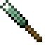
4
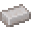


4
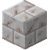
雪花石膏裝飾品
雪花石膏可以被大桶裡的染料染成對應顏色. 未加工的雪花石膏可以用鑿子的平滑模式鑿制鑿制成平滑雪花石膏, 或者透過合成得到樓梯, 臺階, 或磚牆.
樓梯和臺階
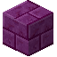
8

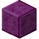
6
石磚和砂漿
將一些小石子鑿制可以得到這種岩石的磚. 然後需要使用砂漿來形成一個堅固的磚方塊.
砂漿可以透過將沙子加入裝有石灰水的大桶得到.
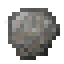
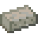
4
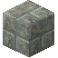
也可以製作出其他的石頭裝飾方塊, 例如裂紋磚和雕刻過的石磚. 將圓石或石磚方塊放在水下的其他苔石旁, 苔蘚就會擴散到鄰近方塊, 得到更多的苔石或苔石磚.
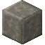
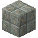
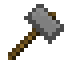